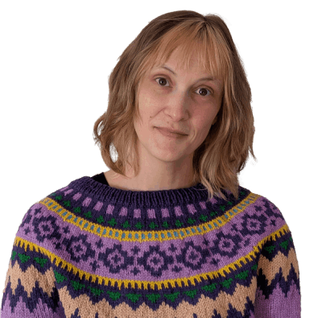

Laboration 2.0
Presentation av mig
Några fakta om mig, som gjort den här uppgiften:
Namn: Frida Ternström
Ålder: Fyller 40 den 30/11
Sysselsättning: Student vid Webbutvecklingsprogrammet
på Mittuniversitetet
Tycker om: Lugn och ro, skogen och bra musik
